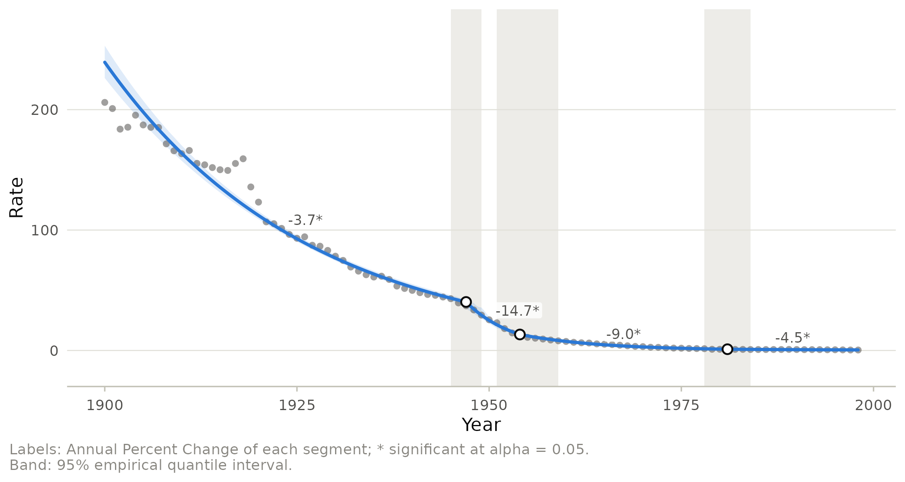
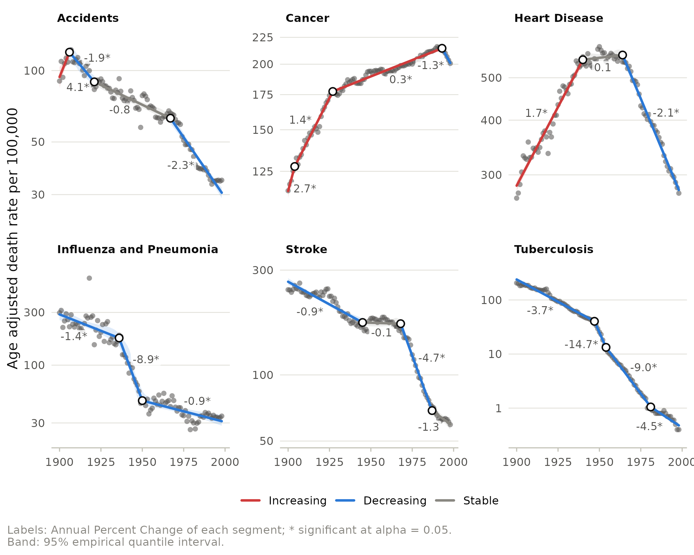
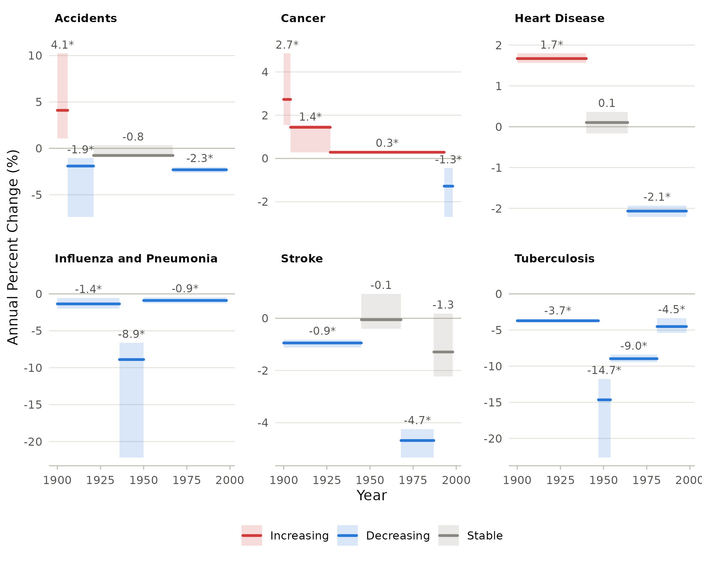
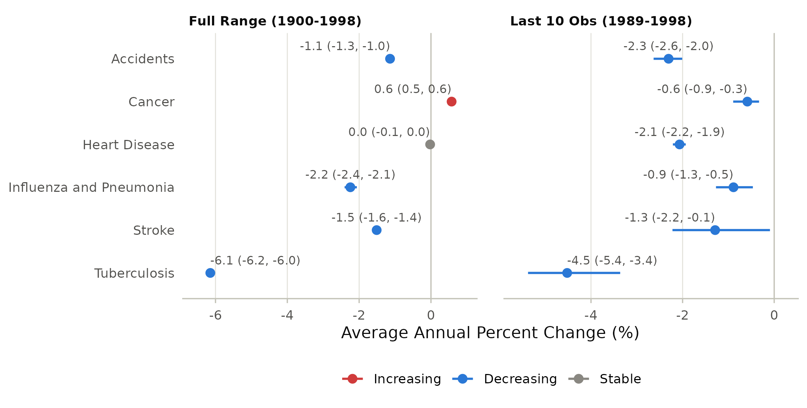

Between 1900 and 1998 the leading causes of death in the United States changed beyond recognition. Tuberculosis, the great killer of the early century, almost disappeared; heart disease rose and then fell; cancer kept climbing until the 1990s. A plot of the rates tells this story roughly. Joinpoint regression tells it precisely: it finds the years in which a trend changed direction or pace, and it summarizes each period by its annual percent change (APC).
This vignette walks through a complete analysis with the
us_mortality data: age adjusted death rates per 100,000 for
six causes.
library(joinpoint)
library(ggplot2)
head(us_mortality)
#> year cause rate population
#> 1 1900 Accidents 90.3 76090000
#> 2 1901 Accidents 109.3 77580000
#> 3 1902 Accidents 93.6 79160000
#> 4 1903 Accidents 106.9 80630000
#> 5 1904 Accidents 112.8 82170000
#> 6 1905 Accidents 108.5 83820000One series
Start with tuberculosis. joinpoint() takes the data, the
time variable and the response. By default it fits a log-linear model
(so segments are summarized by percent changes), searches for the best
placement of 0 to kmax joinpoints on the observed years,
selects the number of joinpoints with the weighted Bayesian information
criterion (WBIC; Kim et al. 2023), and computes empirical quantile
confidence intervals (Kim et al. 2017).
tb <- subset(us_mortality, cause == "Tuberculosis")
fit_tb <- joinpoint(tb, x = year, y = rate, kmax = 3)
fit_tb
#> Joinpoint regression (log-linear model, constant variance)
#> Model selection: WBIC; confidence intervals: empirical
#>
#> Cohort: All
#> Joinpoints: 3 (1947, 1954, 1981)
#> 1900-1947 APC = -3.720* [-3.916, -3.504]
#> 1947-1954 APC = -14.660* [-22.649, -11.774]
#> 1954-1981 APC = -8.967* [-9.467, -8.410]
#> 1981-1998 APC = -4.520* [-5.375, -3.362]
#> AAPC Full Range (1900-1998) = -6.144* [-6.241, -6.032]
#>
#> * Significantly different from zero at alpha = 0.05.Three joinpoints split the century into four periods. The decline accelerated from 3.7% per year to almost 15% per year after 1947, when streptomycin came into use, and slowed again later. The asterisk marks APCs that differ significantly from zero. The average annual percent change (AAPC) condenses the whole century into one number.
The result tables are ordinary data frames:
apc(fit_tb)[, c("start", "end", "estimate", "lower", "upper", "p_value")]
#> start end estimate lower upper p_value
#> 1 1900 1947 -3.719816 -3.915550 -3.504438 0.00000000
#> 2 1947 1954 -14.659682 -22.649226 -11.774320 0.00119976
#> 3 1954 1981 -8.967482 -9.466654 -8.409576 0.00000000
#> 4 1981 1998 -4.520365 -5.374758 -3.362493 0.00079984
joinpoints(fit_tb)
#> model final ci_method joinpoint estimate lower upper
#> 1 3 TRUE empirical 1 1947 1945 1949
#> 2 3 TRUE empirical 2 1954 1951 1959
#> 3 3 TRUE empirical 3 1981 1978 1984autoplot() draws the data, the fitted model, the
joinpoints and the APC of each segment. The shaded band is the 95%
empirical quantile interval of the fitted curve.
autoplot(fit_tb, joinpoint_ci = TRUE)
The gray rectangles are the confidence intervals of the joinpoint locations: the 1947 change is located within a few years.
All causes at once
With by, each cause is fitted separately in one
call.
fit <- joinpoint(us_mortality, year, rate, by = "cause", kmax = 3,
control = jp_control(aapc_last = 10))Coloring segments by the direction of the trend turns the panel into a summary of the epidemiological transition. On a logarithmic axis equal percent changes look equally steep within a panel; the panels have their own scales, so compare slopes across causes through their APCs.
autoplot(fit, color_by = "trend", log_y = TRUE) +
labs(x = NULL, y = "Age adjusted death rate per 100,000")
When the question is “how fast did each trend change, and when”, the APC plot reads more directly than the data. Each segment is drawn over the years it covers, at the height of its APC, with its confidence interval as a band.
plot_apc(fit)
AAPCs are best compared in a forest plot. The fit above requested the
last ten years in addition to the full range through
jp_control(aapc_last = 10).
plot_aapc(fit)
Over the century every cause but cancer and heart disease fell, but in the last decade of the series cancer mortality was falling as well.
Tables for a paper
jp_table() returns the trends formatted for a
manuscript, with the interval and p value of each estimate.
| cause | Trend | Period | APC / AAPC (95% CI) | p |
|---|---|---|---|---|
| Accidents | Segment 1 | 1900-1906 | 4.1* (1.1, 10.2) | 0.020 |
| Accidents | Segment 2 | 1906-1921 | -1.9* (-7.4, -1.1) | 0.004 |
| Accidents | Segment 3 | 1921-1967 | -0.8 (-0.9, 0.3) | 0.062 |
| Accidents | Segment 4 | 1967-1998 | -2.3* (-2.6, -2.0) | 0.008 |
| Accidents | AAPC | 1900-1998 | -1.1* (-1.3, -1.0) | < 0.001 |
| Accidents | AAPC | 1989-1998 | -2.3* (-2.6, -2.0) | 0.004 |
| Cancer | Segment 1 | 1900-1904 | 2.7* (1.5, 4.9) | < 0.001 |
| Cancer | Segment 2 | 1904-1927 | 1.4* (0.3, 1.5) | 0.010 |
model_estimates() gives the regression coefficients
(segment intercepts, slopes and slope changes with their tests), and
model_selection() the statistics used to choose the number
of joinpoints. jp_export() writes every table to text
files, one per table.
jp_export(fit, "results", prefix = "mortality")Where to go next
-
vignette("published-analysis")reproduces a published joinpoint analysis and its figures. -
vignette("model-selection")explains how the number of joinpoints is chosen and why methods disagree. -
vignette("uncertainty")covers error models, autocorrelation and the two kinds of confidence intervals. -
vignette("comparing-groups")tests whether two trends are parallel. -
vignette("coding-changes")handles outliers and changes in disease coding. -
vignette("clustering")finds age groups that share a trend. -
vignette("extensions")fits Poisson and logistic joinpoint models, adjusts for seasonality and estimates joinpoints between observations.